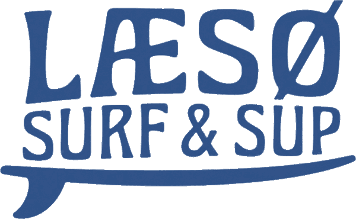

Fællesskab
Et sted at mødes før og efter oplevelser på vandet – på tværs af generationer og aktiviteter.

Læsø Surf & SUP · Projektvision
Et sted, hvor øen møder havet. Et åbent samlingspunkt for vandaktiviteter, natur, læring og fællesskab ved Østerby Havn.
Udforsk visionen ↓01 / Vision
Vi drømmer om et sted, der gør det lettere for både øboere og besøgende at komme tættere på vandet – uanset alder, erfaring eller forudsætninger.
Læsø Havhus er en tidlig projektidé fra Læsø Surf & SUP: et fælles udgangspunkt for surf, SUP og andre vand- og friluftsaktiviteter, skabt i samarbejde med lokale foreninger og aktører.
Det handler ikke kun om en bygning, men om adgang, tryghed, oplevelser og møder mellem mennesker.
Et sted at mødes før og efter oplevelser på vandet – på tværs af generationer og aktiviteter.
Ambitionen er at skabe gode adgangsforhold og plads til mennesker med forskellige behov.
En enkel, nænsom arkitektur, der tager udgangspunkt i kystlandskabet og respekterer klitterne.
02 / Stedet
Vi undersøger mulighederne ved Østerby Havn, med særligt fokus på området mod klitterne og stranden.
En lav, landskabstilpasset bygning kunne rumme udstyr, omklædning og et fælles opholdsrum – måske med en tagterrasse som udsigtspunkt.
En tilgængelig trægangbro gennem sandet kunne forbinde havnen, et eventuelt nabocenter og aktiviteterne ved vandet.
03 / Muligheder
Surf, stand up paddle og mulighed for samarbejde med andre vandaktiviteter.
Samling, introduktion, undervisning, frivillighed og arrangementer.
Børn, unge, voksne, begyndere, erfarne og mennesker med forskellige behov.
04 / Inspiration & ressourcer
En levende samling af steder og projekter, der kan inspirere arkitektur, tilgængelighed, organisering og aktiviteter. Links og noter udbygges løbende.
Fjellerup Strand · Adgang og forbindelser ↗Ebeltoft · Kystliv og mødesteder ↗Klitmøller · Surfmiljø og fællesskab ↗Møs / Ophavet · Projektinspiration ↗05 / Proces
Indsamle idéer og tale med kommunen, lokale aktører og mulige samarbejdspartnere.
Undersøge placering, behov, adgangsforhold, myndighedskrav og mulige finansieringsveje.
Skabe en fælles projektbeskrivelse og konkretisere løsninger i takt med samarbejdet.
06 / Kontakt
Projektet er i idéfasen, og vi vil gerne i dialog med mennesker og organisationer, der kan se mulighederne.
Skriv til os